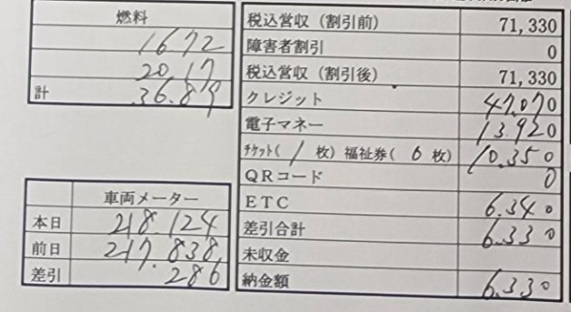

1日の運賃・高速代・給油を記録して、退勤すると日報の下の欄と同じ精算表（本日の納金額）を自動で作るアプリです。今月の売上・勤務時間と、1日あたりの目標もひと目で分かります。
← アプリに戻る
出勤すると右上のボタンが緑の「退勤する」に変わり、運賃などを記録できるようになります。
どれも押すと数字のテンキーが出るので、金額（GASはリットル。小数は「．」）を入れて「確定」します。

日報の下の欄の各項目は、アプリの次の操作から自動で集計されます。